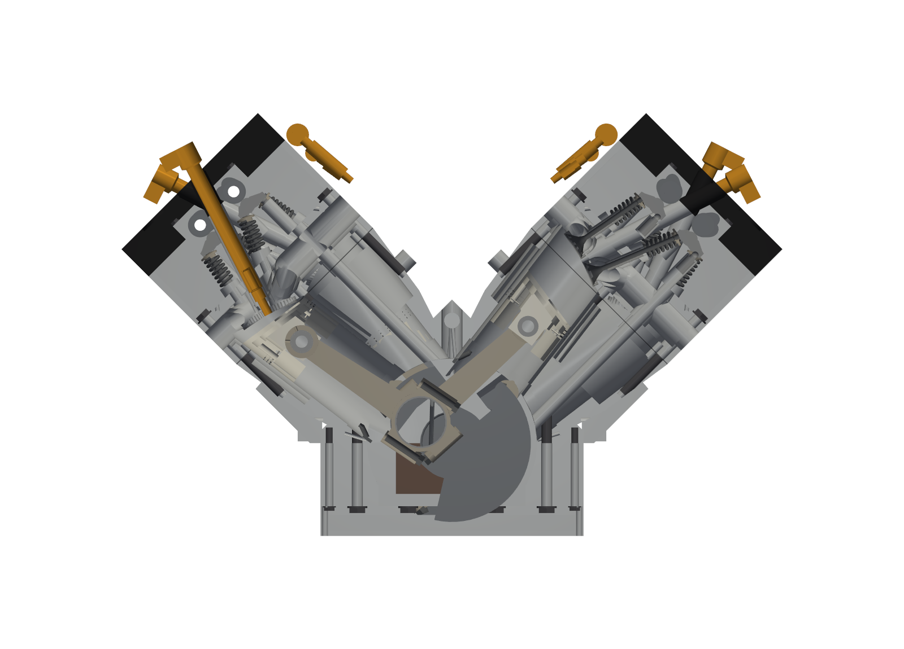
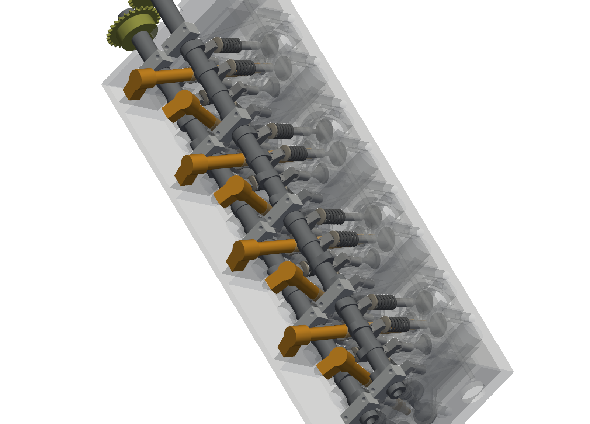
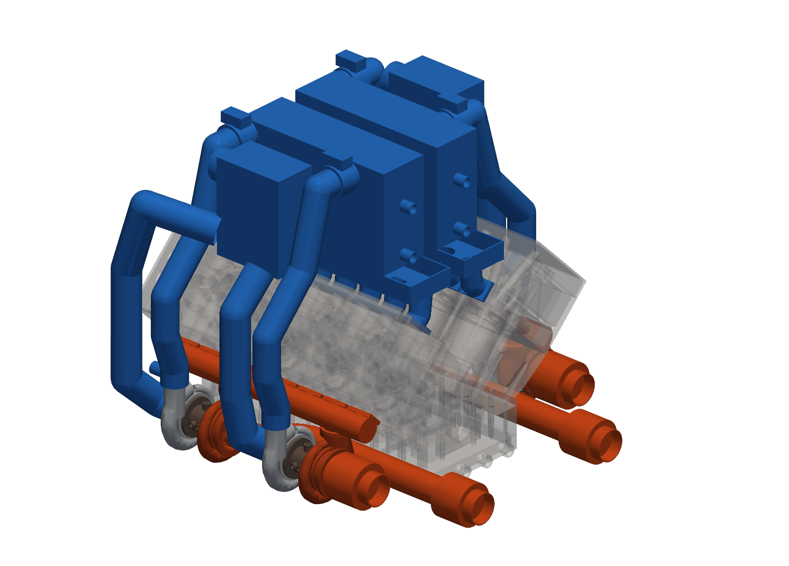
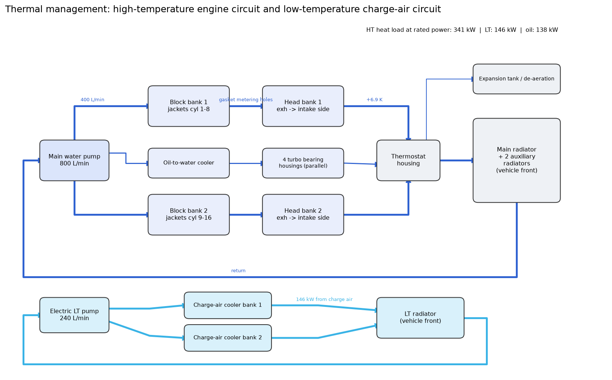
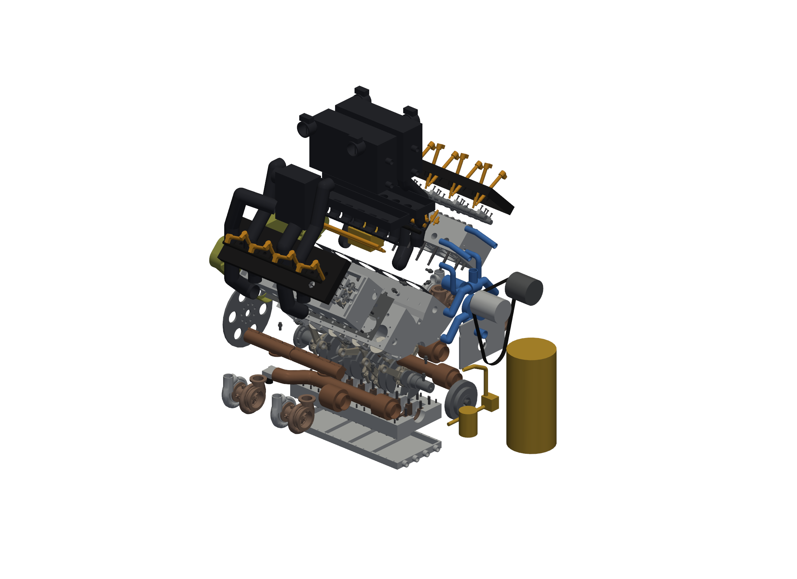
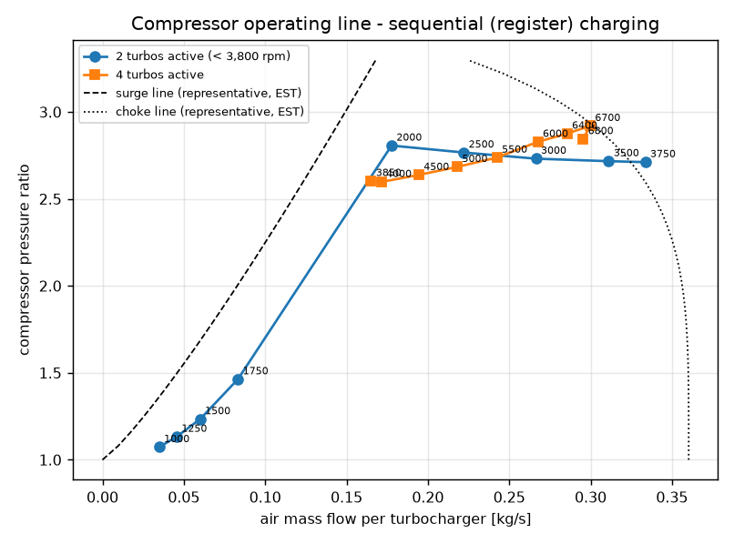
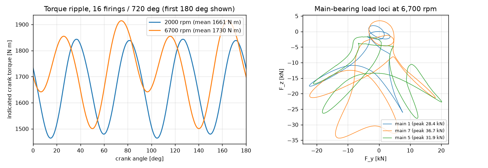
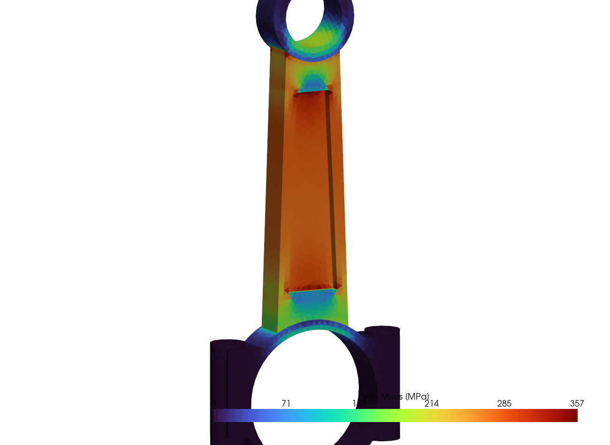
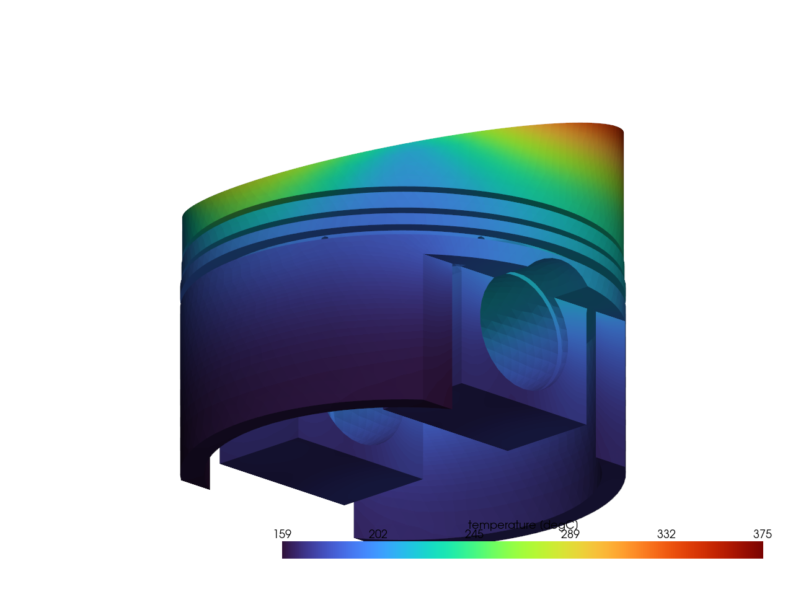
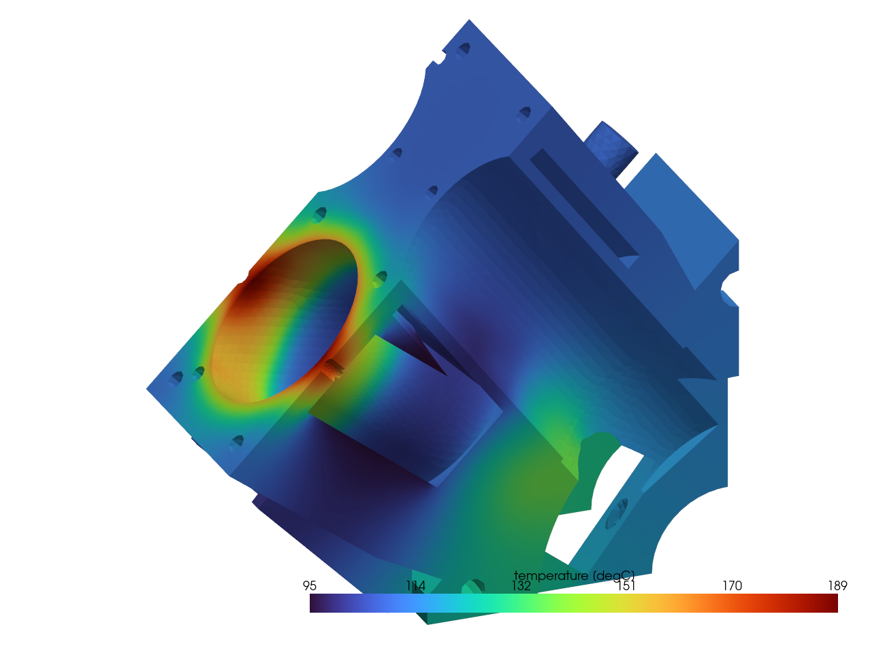

Dressed engine, isometric view from the free end (CAD render).
Subject: 8.0-litre, quad-turbocharged W16 reconstructed from publicly documented information on the Bugatti Chiron engine.
Status: concept-level digital engineering package (analysis + parametric CAD + linear FE). Not manufacturer data, not released for manufacture.
Open item - piston: hot fatigue NOT ASSESSABLE with available public data (the method fails even production-range temperatures: with Woschni x 1.0 the crown runs at 272 degC, inside the 270-310 degC range of production gasoline pistons, and the factors are still 0.23-0.51); crown 376 degC (heat-consistent, Woschni x 2.0) is above the typical 270-310 degC range - OPEN: cooling upgrade + hot-strength piston alloy with manufacturer data. With 4032-T6 lower-bound strength (10,000 h at temperature) the factors are 0.10-0.28; neither they nor the room-temperature factor 2.05 are acceptance measures (sections 8.1, 8.2).
Date: 2026-11-14. Generated by: python -m w16.docs from the evidence files in this repository.
The package reconstructs the architecture of the W16 from public sources and fills every gap with a labelled engineering value. Each number carries a tag: PUB (published), SEC (secondary source), CALC (calculated here), EST (engineering estimate). What exists:
| Deliverable | Content |
|---|---|
| Research + reference specification | sources with confidence levels, firing-order consistency proof, parameter table |
| Analytical models | 0-D cycle and turbo matching, crank-train dynamics and balance, valve train, thermal / lubrication / fuel sizing |
| Parametric CAD | 151 part numbers, 1599 placed parts, 15 sub-assemblies, generated from one parameter file |
| Checks | CAD compression ratio, interference (static + 12 crank angles), mass and envelope |
| FE | 6 linear structural / thermal cases on the CAD solids |
| Outputs | STEP / BREP / STL / 3MF, drawings, renders, exploded and section views, animations, BOM, manufacturing specification |
Dressed engine, isometric view from the free end (CAD render).
| Item | Value | Tag |
|---|---|---|
| Configuration | W16: two VR8 banks at 90 deg, each with two rows at 15 deg; one crankshaft | PUB |
| Displacement | 7,993 cm3 (7992.92 cm3 from 86 x 86 mm) | PUB / CALC |
| Power / torque | 1,103 kW (1,500 PS) at 6,700 rpm; 1,600 N m from 2,000 to 6,000 rpm | PUB |
| Charging | four equal turbochargers, two per bank, sequential; second pair from about 3,800 rpm | PUB |
| Injection | duplex, 32 injectors | PUB |
| Cylinder pitch | 73 mm | PUB |
| Firing | 45 deg intervals; order 1-14-9-4-7-12-15-6-13-8-3-16-11-2-5-10 | PUB / SEC |
| Compression ratio | 9.0 | SEC |
| Cooling | 800 L/min HT pump; separate LT charge-air circuit; charge air cooled by up to 130 K | PUB |
| Mass / length | about 400 kg / 710 mm | PUB / SEC |
Full list and sources: 03_REFERENCE_SPECIFICATIONS/REFERENCE_SPEC.md, 01_RESEARCH/RESEARCH_LOG.md.
All provisional values are in 03_REFERENCE_SPECIFICATIONS/MASTER_PARAMETERS.md (tag EST) and every non-obvious choice is in
00_PROJECT_CONTROL/DECISIONS.md. The most consequential ones:
Coordinate system: X = crank axis (+X flywheel end), Z up, bank 1 (cyl 1-8) towards +Y. Crank throw 42.868 mm (offset bores make the stroke larger than twice the throw), deck height 237.08 mm, bore centres +/-43.71 mm at the deck, bank offset 18.0 mm. Crankpin phases are derived from the published firing order; the two cylinders on every pin require the same pin angle to 1e-13 deg and all firing intervals found numerically are 45.000 deg, which shows the published order and the shared-pin 90 deg layout are mutually consistent.

Four-row arrangement seen from the free end (block transparent).


Crank train inside the transparent crankcase.
Envelope from CAD: dressed engine 976 x 900 x 832 mm (L x W x H); long block 801 x 754 x 483 mm. The published length is 710 mm; this reconstruction's block is 660 mm long and the long block 801 mm including chain housing and crank nose.
Split at the crank axis: upper section with both banks, lower bearing support with nine cast-in iron bearing covers (4 bolts each), dry-sump pan. Zig-zag bores with a 27.9 mm web at the deck and 4.0 mm at the bore foot. Closed deck; the water jacket of each bank is one connected volume of 1.22 L surrounding all eight bores (CAD-measured), fed at the free end, with four transfer holes per cylinder to the head. Oil: central gallery dia 18 mm to the nine main bearings and the inner-row piston jets; two side galleries for the outer-row jets.
Crankshaft assembly group 34.26 kg, eight solid pins with R2.5 relief grooves, one straight oil drilling per rod (main journal -> pin). The webs are only 9.5 mm thick and the rods pass between them at BDC, so counterweights cannot be wider than the webs: each throw is balanced internally to 59-61 % and the sixteen counterweights are sized so that the resultant force and couple of the complete crank are zero: the CAD crankshaft with its oil drillings and the rod / piston equivalents leaves 0.004 kg mm and 2.4 kg mm2 (2 N and 1.2 N m at 6,700 rpm); the final balance is set on the balancing machine. Titanium I-beam rods with trapezoidal small end; forged pistons with a crown tilted 16.01 deg to the pin-axis normal, three rings, slipper skirt.

Crankshaft, rods and pistons.
Each head: eight wedge chambers, 16 intake ports from the valley side and 16 exhaust ports outboard (short and long ports alternate), 32 valves, one row of eight inclined plug wells between the camshafts, a single connected water jacket (2.20 L, CAD-measured), oil galleries with risers to the cam bearings. Valve sizes 32 / 27 mm, lifts 10.0 / 9.5 mm, follower ratio 2.0. Cam lobes are the exact inner envelope of the dia 17 mm roller.


Timing drive at the flywheel end: duplex primary chain, intermediate shaft, four secondary chains.

Flow architecture of one bank.

32 port injectors on four rails, 16 M10 plugs with pencil coils and ion-current measurement, two ECUs (concept). No calibration exists.

Engine-management architecture (concept).

Dry-sump lubrication circuit with calculated flows.

Hierarchy and masses: 06_ASSEMBLIES/ASSEMBLY_HIERARCHY.md. Sub-assembly and master STEP files: 06_ASSEMBLIES/step/, 13_EXPORTS_STEP/.
| Group | Sub-assembly | Part numbers | Parts | Mass [kg] |
|---|---|---|---|---|
| 01 | Crankcase and cylinder block | 7 | 48 | 97.65 |
| 02 | Cylinder heads | 8 | 152 | 43.51 |
| 03 | Piston assemblies | 5 | 112 | 9.78 |
| 04 | Connecting rods | 5 | 112 | 6.84 |
| 05 | Crankshaft | 1 | 1 | 34.26 |
| 06 | Valvetrain | 13 | 324 | 17.41 |
| 07 | Timing system | 10 | 495 | 6.17 |
| 08 | Turbochargers | 14 | 32 | 22.37 |
| 09 | Intake system | 24 | 24 | 24.84 |
| 10 | Exhaust system | 18 | 18 | 17.86 |
| 11 | Fuel injection and ignition | 7 | 68 | 8.73 |
| 12 | Lubrication system | 6 | 6 | 9.13 |
| 13 | Cooling system | 14 | 14 | 3.8 |
| 14 | Accessory system | 15 | 39 | 32.61 |
| 15 | Fasteners and interfaces | 4 | 154 | 11.11 |
CAD mass 346.1 kg dry, as modelled (published: about 400 kg; the CAD figure includes dressing items such as pre-catalysts, air boxes, oil tank and charge-air system, and excludes unmodelled small parts and fluids - the two numbers are not directly comparable).

08_SIMULATIONS/analytical/)
Full-load model results against the published torque and power.
| Quantity at rated power | Model | Published |
|---|---|---|
| Boost pressure | 1.75 bar gauge | not published (about 1.85 bar quoted by secondary sources) |
| Air flow | 60,737 L/min | more than 60,000 L/min |
| Charge-air temperature drop | 115 K | as much as 130 K |
| Turbine inlet temperature | 978 degC (held by enrichment, lambda 0.72) | valve rated 980 degC |
| Peak cylinder pressure | 105 bar | not published |
| BSFC / fuel flow | 383 g/kWh / 567 L/h | - |
Torque and power are model targets, so they match by construction; the informative results are the boost, flows and temperatures and the fact that the turbocharger power balance closes with four equal turbochargers sized at the change-over point. The same sizing gives full torque with two turbochargers from about 2,000 rpm, consistent with the published plateau.

Rod force 50.9 kN compression at full load, 23.5 kN tension at 7300 rpm; main bearing peak 36.7 kN. With fully balanced throws the free forces and moments would be 206 N and 39 N m at rated speed (higher orders only). First torsional mode 274 Hz (lumped model, CAD throw inertia); its order-2.5 resonance at about 6,565 rpm lies inside the operating range (up to 6,800 rpm, rated 6,700) - the viscous damper at the free end must address it.

Fuel power 4983 kW; to HT coolant 341 kW (temperature rise 6.9 K at 800 L/min); to oil 138 kW; charge-air coolers 146 kW at effectiveness 0.90. Oil demand 140 L/min, pump 175 L/min.

Fuel-energy split at rated power (model).
Tools: gmsh tetrahedral meshes of the CAD solids, scikit-fem linear elasticity (P2 unless noted) and steady conduction (P1). Peak values at re-entrant corners and at fixed boundaries are mesh-dependent; the 99.9th-percentile element stress is reported next to the peak.
| Case | Load case | Mesh | Results | Boundary conditions |
|---|---|---|---|---|
| cylinder block slice, cylinder 3 | gas pressure | 115645 tets, gamma min 0.01 | vm max MPa = 171; vm p999 MPa = 122; max displacement mm = 0.163 | 100 mm slice centred on cylinder 3 (contains its complete bore wall ring); crank-axis split plane fixed; the two cut faces (x = cyl. 3 +/- 50 mm) are symmetry planes (axial displacement fixed); design pressure on the upp |
| cylinder block slice, cylinder 3 | thermal | 115645 tets, gamma min 0.01 | T max C = 189; T bore max C = 189; T bore mean C = 125 | 100 mm slice centred on cylinder 3 (contains its complete bore wall ring); crank-axis split plane fixed; the two cut faces (x = cyl. 3 +/- 50 mm) are symmetry planes (axial displacement fixed); design pressure on the upp |
| cylinder block slice, cylinder 3 | thermal expansion | 115645 tets, gamma min 0.01 | bore radial growth mean um = 57.2; bore out of round um = 509 | 100 mm slice centred on cylinder 3 (contains its complete bore wall ring); crank-axis split plane fixed; the two cut faces (x = cyl. 3 +/- 50 mm) are symmetry planes (axial displacement fixed); design pressure on the upp NOTE: thermal growth with the same supports as the gas case (split plane fixed, cut faces symmetric); includes bending of the bank, so out-of-round is an upper bound |
| crank throw 3 in bending | single load case | 503326 tets, gamma min 0.15 | vm max MPa = 378; vm p999 MPa = 270; pin deflection mm = 0.0312; fillet vm max MPa = 281; main fillet vm max MPa = 378; factor on fillet max = 3.71; factor on main fillet max = 2.75; web vm max MPa = 104; ligament vm max MPa = 104 | bay simply supported on its two main bearings (D-050): bearing reactions as compressive pressures on the 12.2 mm shell lands (cosine around the loaded half, parabolic across the land), balanced to the pin load; 3-2-1 poi |
| cylinder head slice, cylinder position 3 (thermal) | single load case | 56985 tets, gamma min 0.00 | T max C = 339; T valve bridge max C = 220; T valve bridge mean C = 159; T roof mean C = 144; energy balance error pct = 2.14e-12 | cycle-mean chamber heat of one cylinder: roof area at the 1-D roof flux, the valve-head share through the seat-insert pockets; convection on all water-jacket walls inside the slice; port gas-side heat input (exhaust port NOTE: The slice faces (x = position 3 +/- 36.5 mm) cut through the outer intake-valve seat pockets, leaving thin adiabatic slivers; T_max and the gas-side 99th percentile are dominated by these slivers and are slice artefacts. Representative results: valve-bridge maximum and mean, roof mean. |
| main bearing cover (cast-in insert) | single load case | 10763 tets, gamma min 0.24 | vm max MPa = 88.8; vm p999 MPa = 74.5; bore deflection mm = 0.0203; yield factor on p999 = 4.97; peak bearing pressure MPa = 28 | bolt-hole surfaces fixed; support from the surrounding aluminium bedplate neglected (conservative) |
| piston | gas pressure | 81483 tets, gamma min 0.00 | vm max MPa = 171; vm p999 MPa = 107; crown deflection mm = 0.093; peak bearing pressure MPa = 85.3; T at vm max C = 248 | gas and gas + thermal: design gas pressure on all chamber-side surfaces above the top ring (crown, valve pockets, top land; ring-groove and second-land pressures neglected); pin reaction as a cosine bearing pressure on t |
| piston | thermal | 81483 tets, gamma min 0.00 | T max C = 433; T crown mean C = 380; T top ring groove C = 267; energy balance error pct = 4.64e-12 | gas and gas + thermal: design gas pressure on all chamber-side surfaces above the top ring (crown, valve pockets, top land; ring-groove and second-land pressures neglected); pin reaction as a cosine bearing pressure on t |
| piston | gas plus thermal | 81483 tets, gamma min 0.00 | vm max MPa = 277; vm p999 MPa = 139; max displacement mm = 0.391; T at vm max C = 248 | gas and gas + thermal: design gas pressure on all chamber-side surfaces above the top ring (crown, valve pockets, top land; ring-groove and second-land pressures neglected); pin reaction as a cosine bearing pressure on t |
| piston | fatigue estimate | 81483 tets, gamma min 0.00 | factor = 2.05; sigma a MPa = 53.6 - room-temperature limit: NOT an acceptance measure (hot fatigue: section 8.1) | gas and gas + thermal: design gas pressure on all chamber-side surfaces above the top ring (crown, valve pockets, top land; ring-groove and second-land pressures neglected); pin reaction as a cosine bearing pressure on t NOTE: gas load from zero to the design pressure every cycle: alternating stress = half the 99.9th-percentile gas-case stress, against the room-temperature fatigue limit (no mean-stress or temperature correction - the hot strength at the boss and ring belt is lower) |
| connecting rod | compression design gas force | 16899 tets, gamma min 0.02 | vm max MPa = 391; vm p999 MPa = 357; yield factor on p999 = 2.47; max axial displacement mm = 0.278; peak bearing pressure MPa = 159 | big-end bore half fixed (loaded half); cosine bearing pressure on the loaded half of the small-end bore; no bolt preload, no contact |
| connecting rod | tension overspeed inertia | 16899 tets, gamma min 0.02 | vm max MPa = 590; vm p999 MPa = 488; yield factor on p999 = 1.81; max axial displacement mm = 0.473; peak bearing pressure MPa = 59.3 | big-end bore half fixed (loaded half); cosine bearing pressure on the loaded half of the small-end bore; no bolt preload, no contact |
| connecting rod | fatigue estimate | 16899 tets, gamma min 0.02 | factor = 1.18; sigma a MPa = 422 | big-end bore half fixed (loaded half); cosine bearing pressure on the loaded half of the small-end bore; no bolt preload, no contact NOTE: alternating stress taken as half the sum of the two p99.9 stresses (conservative, locations differ) |



Crank throw 3 in bending: von Mises stress.


Cylinder-head slice: temperature field.
Result: hot fatigue NOT ASSESSABLE with available public data (the method fails even production-range temperatures: with Woschni x 1.0 the crown runs at 272 degC, inside the 270-310 degC range of production gasoline pistons, and the factors are still 0.23-0.51); crown 376 degC (heat-consistent, Woschni x 2.0) is above the typical 270-310 degC range - OPEN: cooling upgrade + hot-strength piston alloy with manufacturer data.
Evaluated with temperature-dependent strength (4032-T6, lower-bound data after 10,000 h at temperature): factor 0.10-0.28 over the hot regions (table). The room-temperature fatigue factor 2.05 in the FE table is not an acceptance measure: it compares with the 110 MPa room-temperature limit at metal temperatures of 248-388 degC. Piston thermal design is an OPEN item.
| Region (governing element) | Metal temperature [degC] | sigma_a [MPa] | sigma_f(T) [MPa] | Factor | Factor, Goodman | Temperature for factor 1.5, lower-bound data [degC] |
|---|---|---|---|---|---|---|
| Crown above the oil gallery | 388 | 61.4 | 6.4 | 0.10 | 0.08 | 115 (below the 127 degC oil) |
| Crown section under the long-valve pockets | 356 | 58.1 | 7.3 | 0.13 | 0.10 | 124 (below the 127 degC oil) |
| Ring belt at the top ring groove | 301 | 42.3 | 11.6 | 0.27 | 0.21 | 162 |
| Pin bosses | 267 | 53.5 | 15.2 | 0.28 | 0.22 | 138 |
| Slot-end corner under the crown (unradiused in the concept CAD) | 248 | 85.6 | 18.2 | 0.21 | 0.16 | none: room-temperature factor 1.29 (target 1.5) |
Thinnest crown section, 3.3 mm from the pocket floors to the oil-gallery roof: 319-378 degC (mean 354 degC), von Mises up to 116 MPa under gas load and 127 MPa gas + thermal.
The linear-elastic gas + thermal stress (99.9th percentile 139 MPa, peak 277 MPa at 248 degC) exceeds even the hot tensile strength of the alloy (lower-bound data: 63 MPa at 248 degC, 26 MPa at 354 degC), so that result is outside the range of a linear analysis.
Consequences: - With the lower-bound data the crown would have to run at about 115 degC or less - below the 127 degC oil - so cooling alone cannot reach a factor of 1.5 (best cooling case of the FE sensitivity, gallery 4,000 + under-crown 1,000 W/m2K: crown mean 334 degC against 380 degC); a hot-strength piston material or a steel crown, with measured hot fatigue data, and/or lower crown stresses are needed. - Slot-end corner: misses the 1.5 target (room-temperature factor 1.29, above 1.0 but below the 1.5 target, whatever the crown temperature) at a corner the concept CAD leaves unradiused, so the value is mesh-dependent: it needs a real radius and a mesh-converged re-check (OPEN). Its hot factor in the table is mesh-dependent for the same reason. - A heavier piston loads the titanium rod: rod fatigue factor 1.18 now, about 0.044 lower per 50 g of reciprocating mass (0.741 kg now; the overspeed tension scales with it).
Method: sigma_a = 0.5 x gas-case element von Mises; sigma_f(T) = 110 MPa x UTS(T) / UTS(RT), UTS of 4032-T6 after 10,000 h at temperature (EST scaling); factor = sigma_f(T) / sigma_a; Goodman: 1 / (sigma_a / sigma_f(T) + sigma_m / UTS(T)) with sigma_m = sigma_a. Element means (no extrapolation to the surface); the slot-end corner is unradiused in the concept CAD, so its value is mesh-dependent.
Source: ASM Handbook Vol. 2, Properties and Selection: Nonferrous Alloys and Special-Purpose Materials (ASM International, 1990), wrought alloy 4032: typical tensile properties of 4032-T6 at elevated temperature (after 10,000 h at temperature) and fatigue strength 110 MPa at 5e8 cycles (R.R. Moore). Also tabulated in J.G. Kaufman, Properties of Aluminum Alloys: Tensile, Creep, and Fatigue Data at High and Low Temperatures (ASM International / The Aluminum Association, 1999).
Short-exposure (upper-bound) strength data were not evaluated: the fatigue strength needed for a factor of 1.5 at the operating temperatures is 0.58-0.84 of the room-temperature value (1.17 at the slot-end corner); the project judged on 2026-11-20 that short-exposure data cannot change the conclusion.
Why not assessable: the same data and method applied to the crown temperatures of the Woschni x 1.0 case (crown mean 272 degC, inside the published 270-310 degC range of production gasoline pistons) give factors 0.23-0.51 (section 8.2). At 270-310 degC the lower-bound data allow sigma_f = 14.9-10.7 MPa, so a factor of 1.5 would need a gas-load von Mises stress below 20-14 MPa - production pistons run at these temperatures, so tensile data after 10,000 h of static exposure, scaled to fatigue, cannot separate an acceptable piston from an unacceptable one. A verdict needs measured hot fatigue data of the actual piston alloy (manufacturer data).
Evaluation: tools/piston_section_fatigue.py -> 08_SIMULATIONS/fea/piston_section_fatigue.json.
The piston heat comes from the cycle model's Woschni correlation, scaled by woschni_scale = 2.0. The rated point
(6700 rpm, 1,103 kW) was re-solved with multipliers 1.0 / 1.5 / 2.0 on the same hardware (turbine area and
torque target unchanged), and the piston FE was run thermal-only with each heat input; the cycle's piston wall temperature is iterated to
the FE crown temperature so that heat and temperature are consistent ("heat-consistent").
| Woschni x | Piston heat per cylinder [W] | W/mm2 of crown | % of burned (of supplied) fuel energy | Crown mean / max [degC] | Top ring groove [degC] | T3 [degC] (limit 980) | Coolant heat / brake power | Worst hot-fatigue factor (8.1 method) |
|---|---|---|---|---|---|---|---|---|
| 1.0 | 3,059 | 0.51 | 1.6 (1.0) | 272 / 301 | 210 | 1028 (over limit) | 0.21 | 0.23 |
| 1.5 | 4,294 | 0.71 | 2.3 (1.4) | 327 / 368 | 239 | 1004 (over limit) | 0.26 | 0.14 |
| 2.0 | 5,376 | 0.89 | 2.8 (1.7) | 376 / 427 | 264 | 981 | 0.31 | 0.10 |
The committed piston FE (section 8) uses the cycle model's wall temperature (560 K) for the gas-side calibration: 5,988 W per piston, crown mean 380 degC; the heat-consistent value is 376 degC.
Comparison with published values:
Decision (D-045): woschni_scale stays 2.0 - the only multiplier that comes close to the published piston heat share and
keeps T3 at the published 980 degC limit (x 1.0 and x 1.5 run 48 and
24 K over it with the enrichment already at its limit, lambda 0.72);
the uncertainty band is x 1.0-2.0 (crown 272-376 degC). The earlier note that the multiplier was calibrated to coolant heat of
0.4-0.5 x brake power was wrong (the model gives 0.31) and is withdrawn. Whatever the multiplier, the hot-fatigue factors stay far below 1
(table) - see 8.1 for why that check cannot give a verdict with public data.
Evaluation: tools/piston_heat_input_study.py -> 08_SIMULATIONS/analytical/piston_heat_input_study.json.
Geometry. Solid crankpins (D-049); pin relief grooves R2.5, 2.5 mm into the 9.5 mm webs, 7.0 mm of web left behind them (D-048); main-journal fillets R2.5 on the journal at every web, unchamfered main shells 12.2 mm wide (the load-carrying width) - option (b) of D-050, decision of the user 2026-11-25: the shells are narrowed to the largest width, in 0.1 mm steps, that keeps the axial allowance to the fillets (0.36 mm for end float, block / crank thermal growth and tolerances; gap 0.40 mm nominal, 0.04 mm worst case). Option (c), R1.6 with 16 mm shells chamfered 1.0 x 45 deg, missed the combined criterion in the comparison below; that comparison was made with the biased land load (correction below) and was not re-evaluated - corrected, (c) would reach about 1.49 combined, still below 1.5 (estimate: its bending peak x 0.929, the measured change of the R2.5 main-fillet peak, torsion unchanged). Option (b) is kept by the decision of the user of 2026-11-27 for its larger margin.
Boundary conditions (D-050). Until D-049 the slice was clamped: both main-journal surfaces fully fixed. A clamped journal cannot turn, so the throw acts as a frame fixed at both ends and most of its bending moment stays in the journals; the 9.5 mm webs see little of it. The slice is now a bay simply supported on its two main bearings: the bearing reactions are compressive pressures on the 12.2 mm shell lands (cosine around the loaded half, parabolic across the land), balanced to the pin load, and a statically determinate 3-2-1 point support carries only the mesh residual - checked per node in every run: largest reaction at a single support node 119 N, 0.15 % of the pin load (limit 1 %). This is the support of the dynamics bay model and of the classification method for crankshafts (IACS UR M53: a throw on two main bearings, statically determinate). Real bearings let the journal tilt within their clearance and the oil film cannot clamp it, while the neighbouring bays add some restraint: reality lies between the two models, nearer to simple support, so the new model is the more realistic and the conservative one. A fixed journal surface would also have sat on the main fillets. With the solid pin, the change moved the pin-groove factor from 5.34 (hollow pin, clamped, D-048) to 2.83 at 0.35 mm / 2.56 official (R1.6 main fillets, the run of option (c), made with the land-load error described next).
Load-model correction (2026-11-27, D-050 item 9). The bearing-land load had a coding error (fea.crank_solve: the axial coordinate was not
removed from the radial direction of the land pressure), so the lands carried 35 / 65 % of the pin load instead of 50 / 50 and
the end nodes of the 3-2-1 support carried the difference as a couple (9.4 kN per node; the summed support reaction, the only check
then, cannot show a couple). Section moments against the intended simply supported bay: main fillet of main k x 1.172,
pin groove a x 1.054, pin groove b x 0.940, main fillet of main k+1 x
0.816 (tools/crank_support_reactions.py, statics of the discrete loads, no solve). The overall peak of that run, 959 MPa
at support node A, was the point-load singularity of this reaction, not a crank stress. Corrected and re-run: the standard record and the R2.5 convergence below; every run now stops if a single support node carries more than 1 % of the pin load.
Effect on the R2.5 records (pre-fix -> corrected; the pre-fix records are kept as *_before_fix_2026-11-27.json): pin groove official 387 -> 343 MPa (factor 2.69 -> 3.03), main fillet 484 -> 449 MPa (2.15 -> 2.31); main fillet combined bending + torsion 1.66 -> 1.74, Goodman 1.16 -> 1.22, M53 Q 1.30 -> 1.36. At every mesh size the corrected peaks are 11-12 % lower at the groove and 8 % lower at the main fillet - the local peaks do not follow the section moments alone; the governing peaks stay at the same places (main k, pin groove a).
The R1.6 run of option (c) and the option comparison were not re-run (see there).
Mesh convergence (tools/crank_groove_convergence.py, two refinement balls in every refined mesh; element-mean von Mises peak at the
design gas force, pulsating load, factor = fatigue strength 520 MPa / half the peak; converged = less than 5 % between the two finest meshes;
largest reaction at a single support node <= 0.21 % of the load in every run):
| Feature | 1.0 mm | 0.7 mm | 0.5 mm | 0.35 mm | change, two finest | 0.35 mm value (factor) | official: zero-size extrapolation (factor) |
|---|---|---|---|---|---|---|---|
| Pin relief groove | 280.5 | 295.6 | 309.7 | 319.8 | 3.15 % | 319.8 (3.25) | 343 (3.03) |
| Main-journal fillet R2.5 | 378.2 | 385.2 | 406.7 | 419.4 | 3.03 % | 419.4 (2.48) | 449 (2.31) |
Increments per refinement step: +15.1, +14.1, +10.1 MPa at the groove, +7.0, +21.6, +12.7 MPa at the main fillet. The official values are the zero-size linear extrapolation of the two finest meshes (decision D-050: the element-mean stress approaches the surface value about linearly with the element size, so the increments do not shrink) - conservative against the 0.35 mm values. The standard crank FE record (1.0 mm, section 8 table) gives 281 / 378 MPa, 18 % / 16 % below the official values. Web 104 MPa, ligament behind the groove 104 MPa (0.35 mm mesh).
Main-journal fillet, bending + torsion (hand calculation, tools/crank_main_fillet_torsion.py; no FE). Bending: the official peak
of the R2.5 fillet, alternating 225 MPa. Torsion: stress concentration factor of the journal fillet from IACS UR M53
Rev.4 (2019), M53.3.3 / 3.2, beta_T = 0.8 f(r,s) f(b) f(w) = 3.03 (r = R_G / D_G = 0.0368, w = W / D =
0.170; outside M53's ranges r >= 0.03 / w >= 0.2 the larger of the extrapolated and the range-limit value is used:
3.03 / 2.96); alternating torque 2,327 N m at 6,715 rpm (most loaded
section; harmonic synthesis of orders 0.5-12 as M53 2.2.2 of the torsional model with the CAD inertia and the EST damper; order 2.5 alone
1,201 N m - its resonance is at 6,565 rpm), mean 1,738 N m; nominal shear
37.7 / 28.2 MPa alternating / mean, 114 / 85 MPa with beta_T.
Equivalent alternating stress (M53 5.2) sqrt(sigma_B,a^2 + 3 tau_a^2) = 299 MPa, bending and torsion peaks taken in phase at
the same point.
Main-journal fillet R2.5 (option (b), D-050): combined factor 1.74 - meets the 1.5 criterion. Sensitivities, not criteria: with the mean stresses (Goodman on the von Mises equivalents, ultimate 1100 MPa) 1.22; M53 Q with M53's own fatigue strength without credit for nitriding (407 MPa) 1.36 (M53 asks >= 1.15). Bending alone 2.31.
Option comparison on which D-050 was decided (light calculation, tools/crank_main_fillet_torsion.py --compare, 2026-11-25, made with
the land-load error of the crank FE corrected on 2026-11-27: the figures of both options below are biased and were not re-evaluated - corrected, (c) would reach about 1.49 combined, still below 1.5 (estimate: its bending peak x 0.929, the measured change of the R2.5 main-fillet peak, torsion unchanged);
option (b) is kept by the decision of the user of 2026-11-27 for its larger margin, and its corrected numbers are the ones above; the bending peak
of (b) was the official R1.6 FE peak x 0.780, the ratio of the M53 journal-fillet bending factors f_B(r) = 0.1908
r^-0.5568 (M53.3.3); same torque, damper and combination; rule of the user: main fillet below 1.5 combined -> option (b)):
| Option | shell / land [mm] | bending peak [MPa] (factor) | beta_T | combined factor | with mean (Goodman) | M53 Q | main specific load [MPa] | Ocvirk film at 6,700 rpm [um] | alternating torque for 1.5 [N m] |
|---|---|---|---|---|---|---|---|---|---|
| (c) R1.6 | 16.0 / 14.0 | 583 (1.78) | 3.40 | 1.42 | 0.99 | 1.13 | 38.6 | 1.40 | 1,968 |
| (b) R2.5 | 12.2 / 12.2 | 455 (2.29) | 3.03 | 1.73 | 1.21 | 1.35 | 44.3 | 1.14 | 3,077 |
Reference, 16 mm shells before D-050: 33.8 MPa, 1.71 um.
Oil drillings (D-049, tools/check_oil_drillings.py; not in the FE): one dia 5 drilling per rod, main surface -> pin surface at
276 deg; only the pin and main surfaces are cut; walls >= 5.32 mm
to the relief groove and the web faces; 3.16 mm to the main-fillet tangent on the inlet's exit ramp;
inlet openings 1.84 mm inside the main-shell edge and 2.24 mm
from the fillet tangent. Big-end feed - open (D-049): each drilling's inlet is under the 180-deg groove of the upper main shell for half a
turn; a continuous feed needs a 360-deg groove or cross-drillings - to be confirmed with a lubrication network / big-end film model.
Targeted interference re-check after D-049 / D-050 (the full check of section 9 ran on the D-047 geometry): W16-05-001 / W16-01-005 / W16-04-003: clear 341, expected 115; kinematic W16-0[34]- vs W16-05-001, 12 crank angles: clear 224, expected 96.
Limitations: one throw slice under one rod's design gas force spread over the pin (D-047 load model), bending only in the FE, element-mean stresses, no oil drillings in the FE, torsion stress concentration from M53 formulae outside their ranges, torsional damper and damping estimated.
Limitations of the FE work: linear elastic, no contact, no bolt preload, no bearing films, simplified supports, slices instead of the complete castings, cycle-mean thermal loads from the 0-D model, no fatigue solver (factors are simple ratios against handbook limits).
| Check | Part A | Part B | Occurrences | Max overlap [mm3] |
|---|---|---|---|---|
| static | W16-09-air_duct_A-L1 | W16-10-downpipe_B-L1 | 1 | 840.7 |
| static | W16-09-air_duct_A-L2 | W16-10-downpipe_B-L2 | 1 | 838.5 |
These remaining overlaps are packaging errors of this concept model and are listed as open work; they are not hidden.
- Piston-to-valve clearance, spring loads, transverse head clearances: 08_SIMULATIONS/analytical/03_valvetrain.md.
- Comparison with published targets: section 7.1.
| Criterion | Result | Evidence |
|---|---|---|
| All sixteen cylinders are represented | PASS | 16 bores in the block CAD; pistons x16 |
| Four cylinder banks (rows) correctly organised | PASS | two VR8 banks at 90 deg, each with two rows at 15 deg; firing intervals 45.000 deg (layout check) |
| Engine architecture mechanically coherent | PARTIAL - packaging overlaps listed | interference check: 2 static and 0 kinematic clash pairs remain (listed in the report) |
| Displacement consistent with bore and stroke | PASS | 7992.92 cm3 vs 7,993 cm3 published |
| All sixteen piston assemblies modelled | PASS | pistons 16, pins 16, rings 48 |
| Shared crankshaft modelled | PASS | one-piece crank, 8 pins, 9 mains, distributed counterweights |
| All connecting rods represented | PASS | rods x16 with caps, shells, bushes, bolts |
| Cylinder heads and the 64-valve system modelled | PASS | 64 valves, 64 springs/retainers/followers/support elements, 4 camshafts; two head castings serve the four rows (documented architecture, decision D-003) |
| Four turbochargers modelled | PASS | 2 RH + 2 LH units with housings, wheels, bearing housing, actuator |
| Sequential turbocharging flow architecture documented | PASS | diagram + animation + matching calculation |
| Intake and exhaust systems connected | PASS | manifolds, coolers, charge pipes, logs, cross-over, down-pipes modelled per bank |
| Fuel injection and ignition represented | PASS | 32 injectors, 4 rails, 16 plugs, 16 coils; EMS architecture diagram |
| Lubrication and cooling circuits modelled | PASS | galleries and jackets are real passages in block/heads; external circuit parts and 1-D flow calculations |
| Major mechanical interfaces validated | PARTIAL | CAD interference check (static all-pairs + 12 crank angles); CAD compression ratio 9.00, 9.00 |
| Parametric CAD files editable | PASS | geometry is generated from src/w16/params.py; BREP per part in 05_COMPONENT_CAD/ |
| STEP exports generated | PASS | 166 component STEP files; master assembly 187.45 MB; 15 sub-assemblies |
| STL and 3MF exports generated where supported | PASS | 166 STL, 159 3MF component files |
| Exploded assembly documentation complete | PASS | exploded views + hierarchy |
| Engineering drawings available | PASS | 9 sheets (PDF/SVG/PNG) |
| Simulation evidence documented | PASS | FE cases run: block, crank, head, insert, piston, rod; not run: none; 0-D/1-D models in 08_SIMULATIONS/analytical. No 3-D CFD. |
| BOM complete | PASS | 151 part numbers (modelled content only) |
| Final technical report produced | see file | 12_FINAL_REPORT/ (Markdown + PDF) |
| Deliverables organised in the structured directory | PASS | folders 01-14 + 00_PROJECT_CONTROL + src |
| Piston at operating temperature: hot fatigue (engineering check added 2026-11-20, not in brief section 21) | NOT ASSESSABLE - OPEN | hot fatigue NOT ASSESSABLE with available public data (the method fails even production-range temperatures: with Woschni x 1.0 the crown runs at 272 degC, inside the 270-310 degC range of production gasoline pistons, and the factors are still 0.23-0.51); crown 376 degC (heat-consistent, Woschni x 2.0) is above the typical 270-310 degC range - OPEN: cooling upgrade + hot-strength piston alloy with manufacturer data; factor 0.10-0.28 with 4032-T6 strength after 10,000 h at temperature (section 8.1); the room-temperature factor 2.05 is not an acceptance measure |
151 part numbers; see 10_BOM_AND_PROCUREMENT/BOM.md / BOM.csv. No costs are given because no reliable price source exists.
See 11_MANUFACTURING_DOCUMENTATION/MANUFACTURING_SPEC.md (materials, processes, critical dimensions, tolerance classes, inspection, assembly sequence, maintenance).
07_ENGINEERING_DRAWINGS/ (9 PDF sheets, also SVG/PNG).13_EXPORTS_STEP/ (master assembly + components); sub-assemblies in 06_ASSEMBLIES/step/. STL / 3MF: 14_EXPORTS_STL_3MF/.09_ANIMATIONS/ (7 GIF, 7 MP4).set PYTHONPATH=src
.venv\Scripts\python -m w16.reports analytical package
.venv\Scripts\python -m w16.cad.assembly CAD build + summary
.venv\Scripts\python -m w16.cad.export all exports, hierarchy, validation
.venv\Scripts\python -m w16.cad.export interference
.venv\Scripts\python -m w16.cad.render views and animations
.venv\Scripts\python -m w16.cad.drawings drawings
.venv\Scripts\python -m w16.sim.fea finite-element cases
.venv\Scripts\python -m w16.diagrams schematics
.venv\Scripts\python -m w16.docs BOM, manufacturing spec, this report